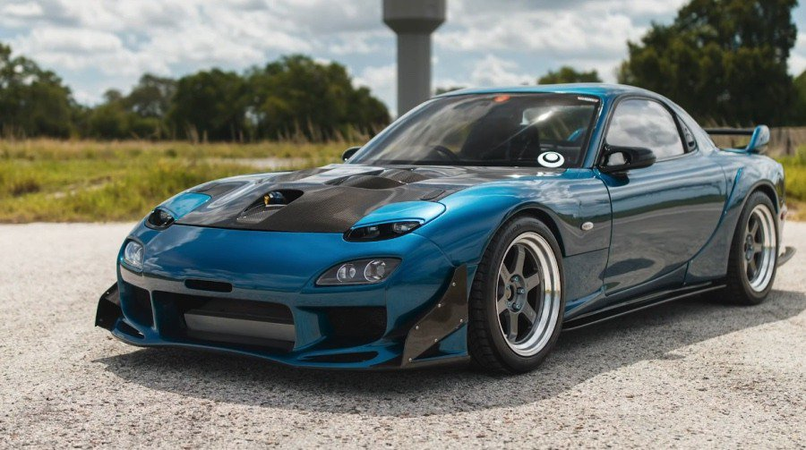
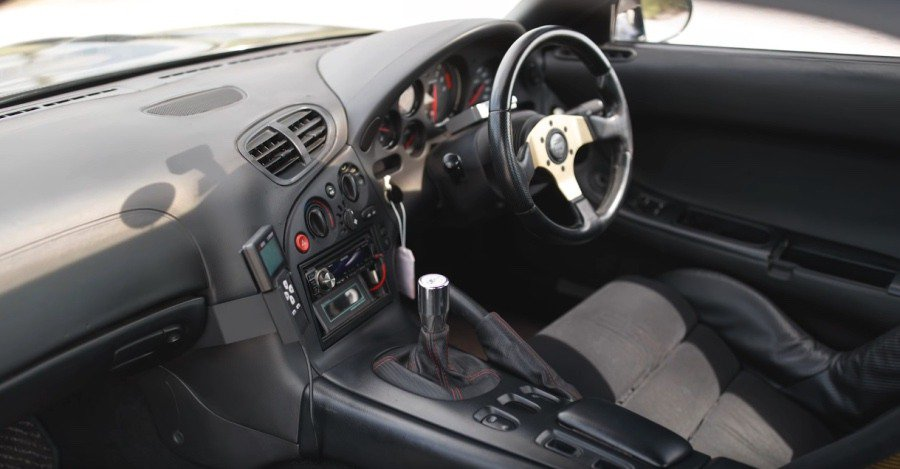
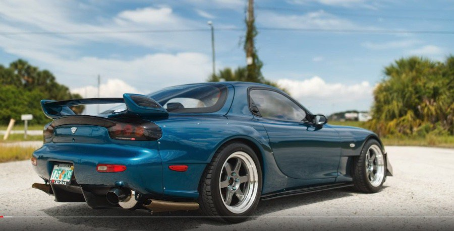
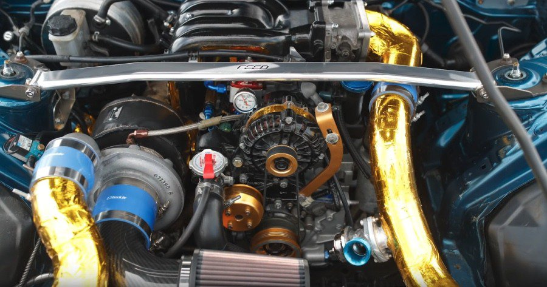
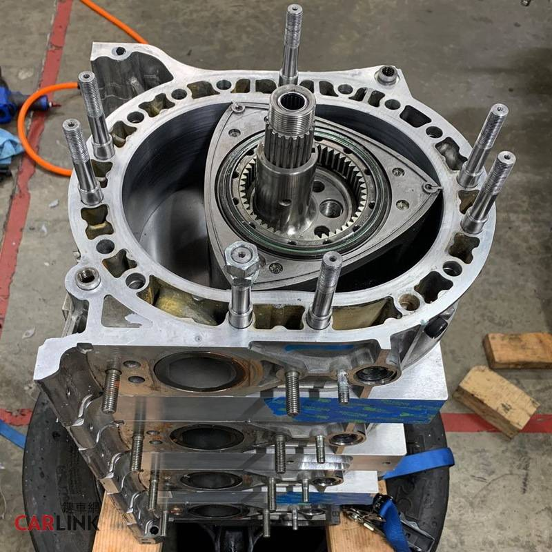

4.5萬元買的Mazda RX-7現在竟然帥成這樣！
便宜沒好貨，特別是當你找到一輛價格比新摩托車還便宜的經典跑車時。以上的說法在絕大多數的時候，應該都是成立的，但有時也會有例外。你能相信圖片中這輛Mazda RX-7雙門跑車的主人當年只花了1,500美元(約4.5萬元新台幣)就把它開回家了嗎？
FD世代的Mazda RX-7是1990至2000年初之間最經典的日系跑車之一，同期的日本對手包含了Honda NSX、Nissan Skyline GT-R、Nissan 300ZX以及Mitsubishi 300GT等…。經過漫長的等待，這些經典日系右駕跑車終於不再受到美國進口汽車安全法規限制，可以合法運到美國並合法上路了！
Mazda馬自達汽車當年僅打造了68,589輛第三代FD Mazda RX-7，而這輛經典日系雙門跑車至今仍深受到全球性能迷們所喜愛。或許是絲毫不退流行的設計又或者是它獨特的引擎與操控樂趣。圖片中這輛於最新Hoonigan Autofocus影片中出現的RX-7還擁有一個有趣的故事。
根據前美軍武裝部隊車主表示，這輛Mazda RX-7是他於2013年進駐日本時購買的。車主當時只花了1,500美元(約4.5萬元新台幣)買到了這輛可正常行駛的RX-7跑車。車主一買完車後，便立即替愛車進行升級，其中還包含漆上與Honda CR-Z相同的藍色烤漆。
而在Mazda RX-7要被運回美國之前，車主還特別將部分改裝零件拆除，讓愛車能低調且順利通過檢驗。當這輛Mazda RX-7成功抵達美國後，車主又再度替愛車進行大幅度且擁有質感的改裝。原廠設定日規Mazda RX-7當年搭載了一具擁有252匹座最大馬力與29.98公斤米巔峰值扭力出的1.3升輪增壓轉子引擎。當然這輛RX-7的動力早已遠超過原廠標準了。
RX-7這個名稱始自於1978年，到2002年退出市場為止，一共曾經生產了分別稱為SA22C(1978~1985)、FC3S(1985~1991)與FD3S等三代車型；它們最大的特色，在於都使用了相當罕見的轉子引擎，並且有相當傑出的動力表現。其中最為車迷所熟知的，自然就是1991~2002年間擔任品牌性能旗艦的第三代FD3S車型。
整個RX-7最受注目，也最受爭議的地方，自然是其轉子引擎；許多熱情車迷都喜歡稱讚其動力系統僅有1,308cc，但卻能發揮出超乎水準甚多的動力。然而事實上，Rotary Engine的運作方式，原本就與活塞式引擎不一樣，因此並沒有辦法進行直接比較；特別是就油耗、排氣情況而言，轉子引擎的表現也與馬力相近的傳統引擎相去無幾，因此硬要進行排氣量上的比較，並沒有甚麼意義。
RX-7 FD3S發表於1991年10月，並於12月就迅速開賣，本車在販賣體系上，是附掛在Mazda另一個具有強烈運動形象的副品牌，因此在日本的全名稱為「efini RX-7」，並擁有專屬的廠徽；然而由於日本在當時正逢經濟泡沫破滅，因此這個多品牌策略並沒有成功，並於1996年取消，全部重新回歸到Mazda旗下。
整條三代RX-7的生產線相當複雜，一般可分為1991~1995的前期型、1996~1998的中期型以及1999~2002年的後期型。一般而言，前期型的動力為255hp，並曾經在1993年歷經了車體剛性強化、懸吊調整等重大改革，還追加裝載了專屬空氣力學系統的Type RZ、Type R II等車型，並於大受歡迎後，於1995年繼續追加Type R-S。
至於在中期型的時候，則取消了「efini」的稱號，而回復成Mazda RX-7，再將供油電腦從8提升到16位元，以改良油耗與動力曲線，手排車型也在這波變革中，將輸出提升到了265hp。